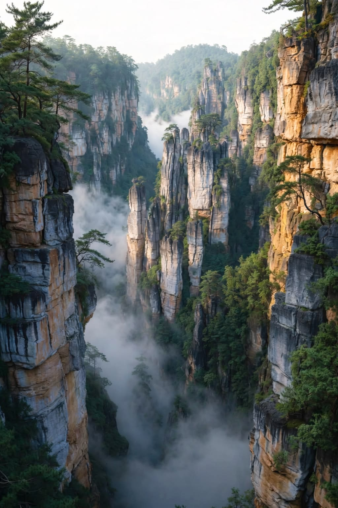
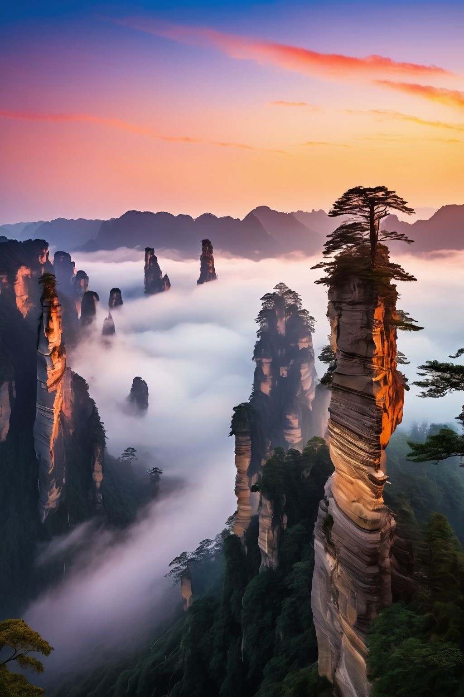
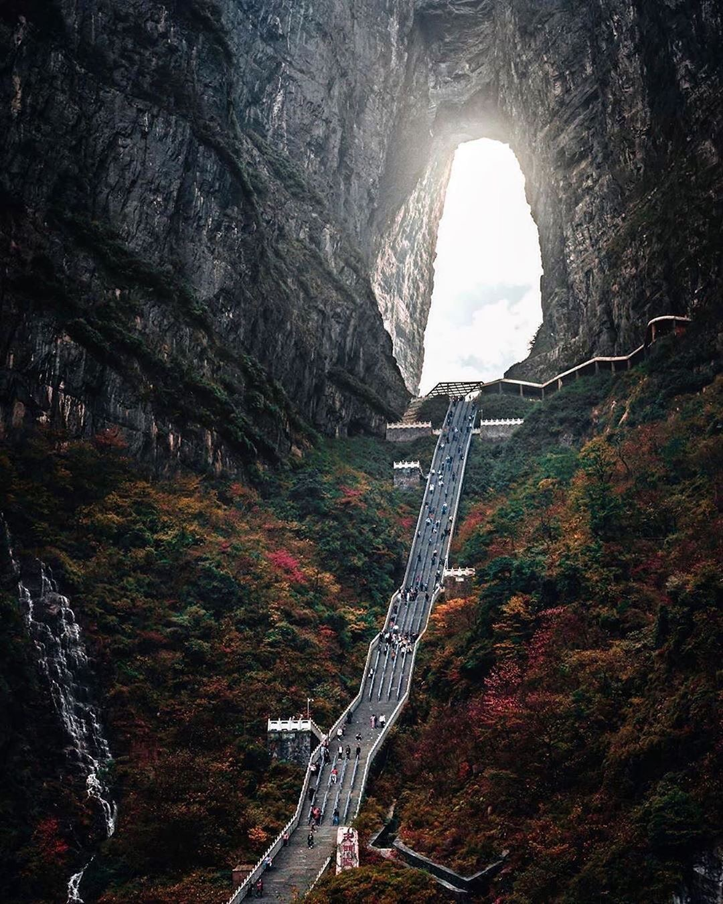
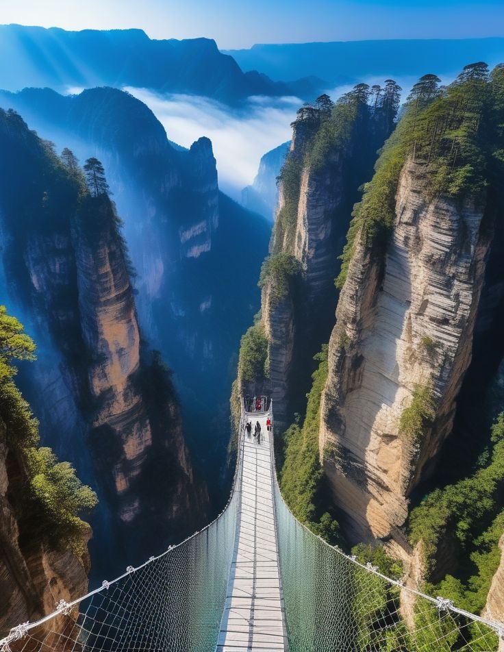

The mountains that inspired Avatar. Even more dramatic in real life.
Zhangjiajie's sandstone pillar formations are among the most extraordinary geological features on Earth. Over 3,000 quartzite pillars rise from subtropical forest, some reaching over 200 metres.
James Cameron used them as inspiration for the floating mountains of Pandora in Avatar — but no CGI can capture the experience of standing among them. For geology students, this is tectonic uplift and erosion made visible on a staggering scale.
The Tianmen Mountain cable car and the world's longest glass bridge add engineering spectacle to natural wonder.

Zhangjiajie National Forest Park. Walk among the sandstone pillars that inspired Avatar's floating mountains. Real geology behind the film's most iconic scenery.

7.5 km trail through old-growth forest and towering sandstone pillars. One of China's finest nature hikes.

World's longest cable car ascent. Glass-floor sky walkway clinging to the cliff face. Tianmen Cave — a natural arch in the mountainside.

The longest and highest glass-bottomed bridge in the world. Structural engineering discussion: how do you suspend 430 metres of glass 300 metres above a canyon?
April–October for the best conditions. Misty mornings are spectacular — the pillars emerge from clouds like floating islands. Autumn colours peak in October.
Flight from Guilin to Zhangjiajie Hehua Airport. The national forest park is a 40-minute drive from the city centre.
Moderate hiking required — trails involve steps and elevation changes. Cable cars are available for major ascents, making key viewpoints accessible to all fitness levels.
2 nights in Zhangjiajie as part of our Nature & Landscapes programme. Chengdu → Guilin → Zhangjiajie. From €3,290pp all-inclusive from Dublin.